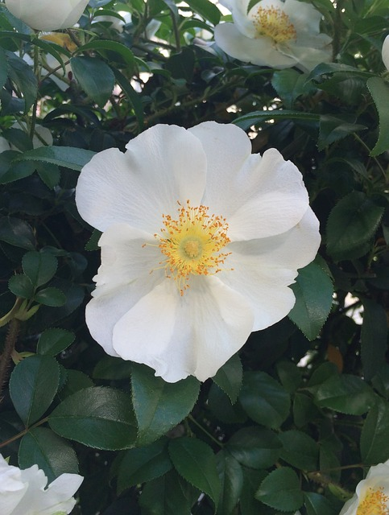
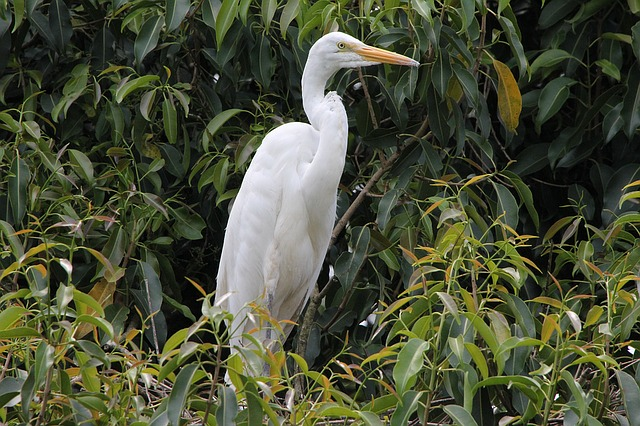
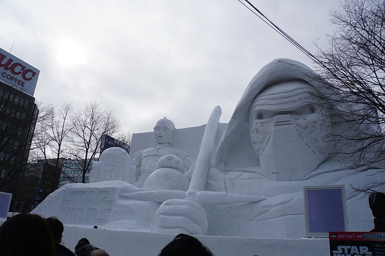

전통적으로 일본에서 사용된 오래된 행정구역인 오기칠도(五畿七道)를 따라 1869년에 홋카이도 라고 이름지었다. 일본 내에서는 혼슈 다음으로 큰 섬이고, 세계적으로는 21번째로 큰 섬이라고 알려져 있다.
전통적으로 일본에서 사용된 오래된 행정구역인 오기칠도(五畿七道)를 따라 1869년에 홋카이도 라고 이름지었다. 일본 내에서는 혼슈 다음으로 큰 섬이고, 세계적으로는 21번째로 큰 섬이라고 알려져 있다.
전반적으로 냉대기후를 보이고, 내륙부에서는 기온 교차가 크다.
동해 방향으로는 겨울에 적설이 많고, 태평양 연안에는 여름에 바다안개가 발생하기도 하며, 오호츠크해 연안에서는 겨울에 유빙을 관찰할 수 있다.
|  |  |  | |
삿포로 중심부에 위치한 공원으로 "눈축제"의 회장으로도 유명한 장소.
봄에는 "라일락 축제", 여름에는 "비어 가든"과 "YOSAKOI소란 축제", 가을에는 "어텀 축제"도 개최되는 곳이다. 공원 끝 쪽에는 삿포로 TV탑이 위치하는데, 탑의 전망대에서는 직선으로 이어지는 공원의 풍경과 삿포로의 거리를 구경할 수 있다.
삿포로 역과 이어져 있어 접근성이 높다. 삿포로의 거리를 지상 160m의 높이에서 바라볼 수 있는데, 360도 파노라마 조망으로 먼 수평선과 산줄기까지 내다보는 것이 가능하다. 전망 플로어의 카페에서는 밤이 되면 알코올류의 음료도 제공한다.
삿포로 맥주원에 있는 유일한 맥주 박물관.
메이지의 흔적을 남긴 공장을 이용한 건물은 홋카이도 유산으로 지정되어 있다. 근대 일본의 개척사부터 삿포로 맥주의 탄생, 각종 포스터 자료를 견학할 수 있으며, 맥주원 부지 내에 있는 "개척사관 굴뚝"은 인기 촬영 장소이다.
삿포로의 명과 "시로이코이비토"의 제조공정을 견학할 수 있는 장소.
파크 내에는 거대한 하트 모양의 "시로이코이비토"를 만드는 체험 공방이나 캔디 랩, 아이들이 즐길 수 있는 미니 철도나 걸리버 타운 등이 있다. 여름의 안뜰은 꽃이 만발한 모습을 볼 수 있고, 겨울에는 일루미네이션으로 장식되어 있다. 시계 탑에서는 매 정시마다 장난감 인형 어트랙션을 볼 수 있다.
주철로 만든 독특한 헬멧 모양의 냄비 혹은 후라이팬을 이용하는 음식.
얇게 썬 양고기와 콩, 양배추, 호박 등의 야채를 함께 구워먹는다.
몽골왕조의 창시자였던 징기스칸이 좋아하던 음식에서 기인했거나, 몽골군이 군모 위에 양고기를 구웠던 것에서 기인했을 것이다.
홋카이도의 많은 레스토랑은 징기스칸나베를 전문적으로 팔고 있는데, 관광객이 많이 찾는 삿포로 맥주가든과 기린 맥주가든 같은 큰 맥주집에서 인기가 많다.
신선한 연어 한 마리를 머리부터 꼬리까지 다 넣고 만든 찌개 음식.
연어가 잘 잡히는 이시카리가와 강에서 따온 이름이지만, 오비히로 지역에서는 '도카치나베'라는 이름으로 알려져 있다.
된장을 넣고 끓인 다시마 국물에 토막 낸 연어살과 야채, 두부, 곤약을 넣는다. 지역에 따라서 감자, 양배추를 넣기도 한다.
홋카이도 지역 한정으로 판매되는 맥아 100%의 맥주로, 고온 단시간으로 양조하는 호흐 쿠르츠(Hoch Kurz) 방법을 채용하고 있다.
알코올 도수가 낮고 향이 국산 맥주와 달라 국산 맥주에 길들여 있다면 입맛에 맞지 않을 수도 있다.